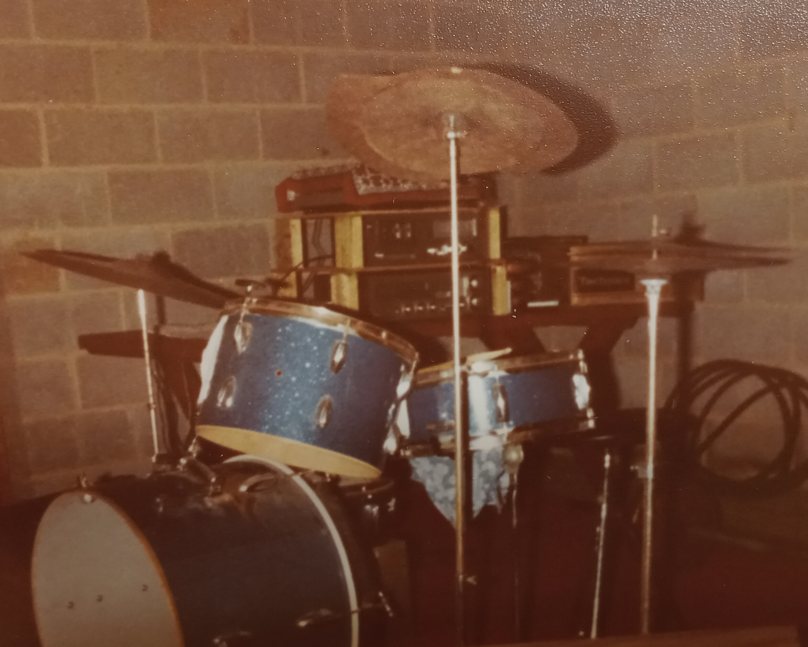
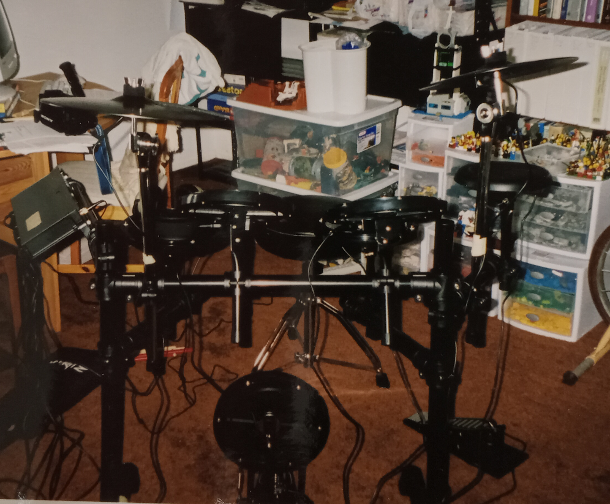
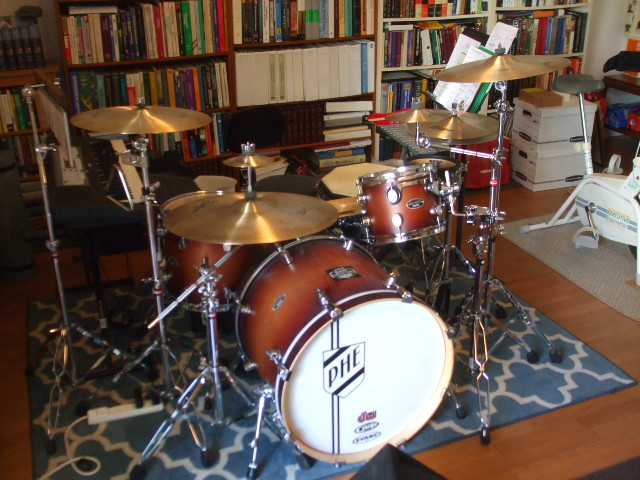
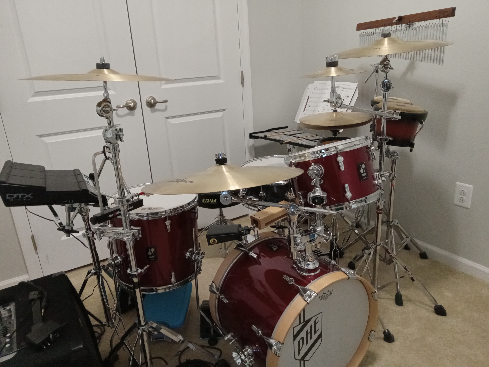

I'm not the kind of drummer who displays his fifty vintage snare drums tastefully arranged on wood-stained shelves in his home studio. (I can make do with one, thank you very much.) The drum kits I've owned through the years are definitely not collector's items, but I believe the stories behind them are more interesting than the actual hardware.
The Seventies

I first learned the basic
rudiments
on a snare drum
in elementary school in 1972.
By the time I got to high school,
I was playing in the big band on a normal school-owned
Ludwig kit, but I really needed a set of my own.
One day I found an ad in the classified section of the Washington Post
for a set of drums that some guy in Wheaton, MD was selling.
(This wasn't
craiglist,
so there weren't any photos.)
Since I was a broke 15-year-old, my dad graciously offered to drive
me down there and pay a stranger
the $25 ($180 in today's money!)
for what turned out to be a rather hideous piece
of junk.
However, it had everything a drummer needed: throne, snare drum,
toms, bass drum, cymbals, pedals, stands, etc. Sure, the cymbals
looked and
sounded worse than trash can lids,
and I swear the shells were made of pressed cardboard
(still a form of wood, right?),
but that nasty thing enabled me to become a better
drummer, even at the risk of driving my parents crazy.
The Eighties
 Ah, the 1980s: big hair, big shoulder pads, and even bigger tom-toms.
By the time I graduated from college and was making a decent salary
as a programmer,
I decided it was time to trash the junky kit and purchase a real
set of skins.
So in the summer of 1985, if memory serves,
I bought an entry-level
Tama
Swingstar 5-piece shell pack (the drums themselves) in shiny black,
Tama cymbal boom and hi-hat stands, a Tama throne,
and a Tama double bass pedal.
I also purchased eight
A Zildjian
cymbals and three
Rototoms.
I bought most of this stuff from a snooty drum salesman
at the now-closed Veneman's Music store located on (the appropriately named)
Rockville Pike in Rockville, MD.
(I suppose he really wanted to be making bank
playing drums in some band rather than selling equipment to dorks like me.
I reckon I spent the equivalent of $1500 in today's money, so that dude
should have at least appreciated the commission!)
By the early 1990s
the drums ended up in my townhouse's
increasingly cluttered basement laundry room,
and since I couldn't play them without driving my family and neighbors
bonkers, in 1994 I reluctantly sold all of my equipment
except for the throne.
So why did I retain a momento from my past?
Ah, the 1980s: big hair, big shoulder pads, and even bigger tom-toms.
By the time I graduated from college and was making a decent salary
as a programmer,
I decided it was time to trash the junky kit and purchase a real
set of skins.
So in the summer of 1985, if memory serves,
I bought an entry-level
Tama
Swingstar 5-piece shell pack (the drums themselves) in shiny black,
Tama cymbal boom and hi-hat stands, a Tama throne,
and a Tama double bass pedal.
I also purchased eight
A Zildjian
cymbals and three
Rototoms.
I bought most of this stuff from a snooty drum salesman
at the now-closed Veneman's Music store located on (the appropriately named)
Rockville Pike in Rockville, MD.
(I suppose he really wanted to be making bank
playing drums in some band rather than selling equipment to dorks like me.
I reckon I spent the equivalent of $1500 in today's money, so that dude
should have at least appreciated the commission!)
By the early 1990s
the drums ended up in my townhouse's
increasingly cluttered basement laundry room,
and since I couldn't play them without driving my family and neighbors
bonkers, in 1994 I reluctantly sold all of my equipment
except for the throne.
So why did I retain a momento from my past?
The Aughts

Well, I always wanted to get back to playing the drums, and in the spring
of 2001 I spotted an opportunity and
finagled my way onto the worship band rotation at my
church.
Fortunately for me (and the other band members),
learning to play the drums
was like learning to ride a bike:
you never completely forget how to do it.
Sure, I was a little rusty at first, but in a few weeks' time
I got my groove back.
And for the second time in my life,
I wanted to practice drumming at home.
It dawned on me that I could preserve everyone's
hearing by getting electronic drums,
so in 2002 I purchased an entry-level
Alesis mesh kit.
I quit the worship band in 2005, and a few years later I began my
amateur
career
as a musical theatre percussionist.
The Teens

For my first two musicals,
I had to borrow someone else's acoustic drums (and cymbals, stands, etc.),
but when it came time to prepare for musical #3,
I decided I wanted to lug my own hardware into
the pit.
With a kid in college I wasn't in a position to spend lavishly,
so in early 2012
I settled on a so-so economy
PDP
reddish all-birch 5-piece FS shell pack. (I really wanted the blue ones,
but they were out of stock.
In all honesty, I really wanted something other than a PDP.)
I purchased another set of
A Zildjian cymbals (old school is the best school)
and a bunch of
Gibraltar
stands
to round out the kit.
For grins
I used a different
setup
during each of the next three musical performances.
With the approach of musical #5,
I decided to splurge a little, so in late 2015 I bought a high-end maple
DW Performance Series
snare drum.
What I would've given to switch out the rest of my drums!
In 2017 I drove to
Guitar Center
and sold my PDP shells, hoping at some point
to purchase a nicer-sounding kit
to go with my fancy DW snare in time for the next musical in 2018,
but I stopped looking, and since then
I haven't performed in any musical productions.
The Roaring Twenties

It's 2022. My percussion gear is boxed up.
I don't have any musical theatre gigs lined up.
What's a poor drummer to do?
I know!
Order a Red Moon Sparkle
Sonor AQX Jazz
poplar 4-piece compact shell pack and recreate an orchestra pit in my den!
These relatively inexpensive drums are
small enough to fit in my dinky little car, but they make a big noise.
(BTW, if you want to know what the AQX Jazz sounds like
in a professional setting, watch this YouTube
video. [1])
So if you'll excuse me, I'll be down here practicing rudiments, tuning toms,
waiting for a call/text/email...
Notes